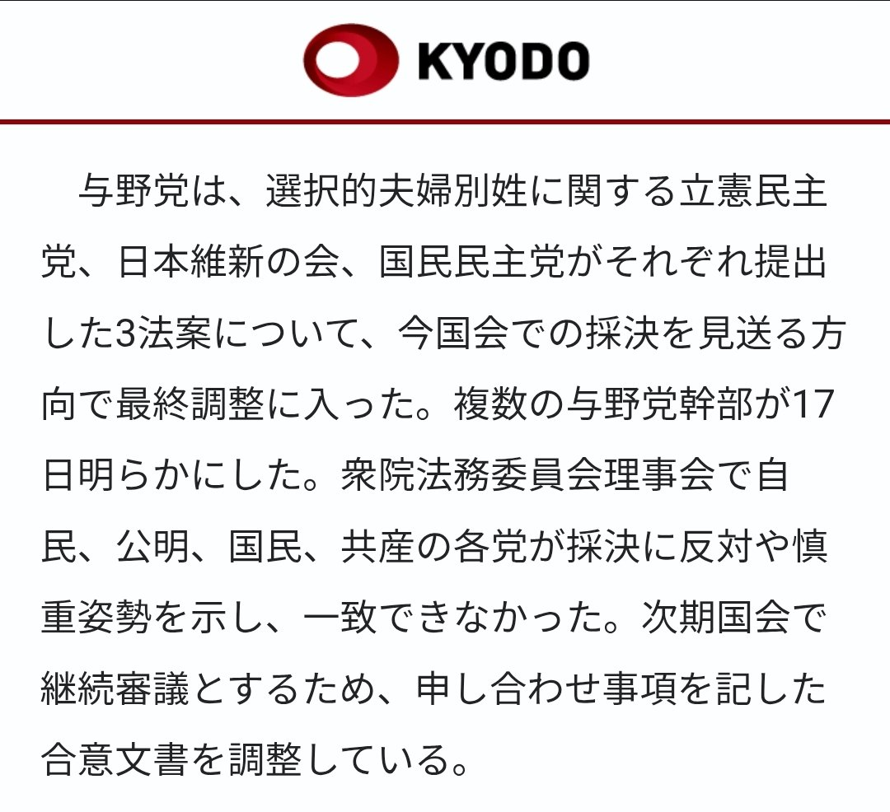
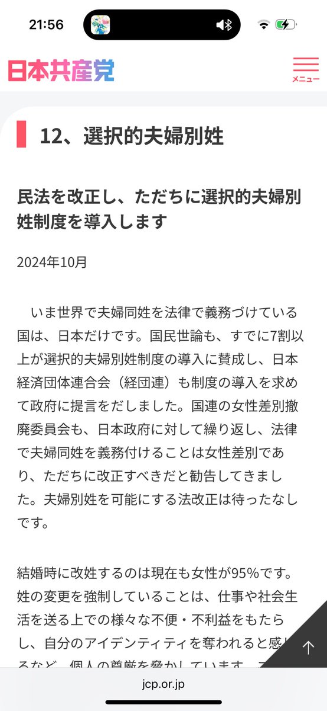

RT @kant1805: 我再也受不了日本共产党了，之前是他们自己说了一旦选择性夫妻别性法案开始审议他们一定会投票支持，而且日共的官网里也提到了选择性夫妻别性的必要性。那为什么它们跟公明党和国民民主党一样，一边说自己支持选择性夫妻别性一边又反对？？完全无法理解，如果在政策上都…



我再也受不了日本共产党了，之前是他们自己说了一旦选择性夫妻别性法案开始审议他们一定会投票支持，而且日共的官网里也提到了选择性夫妻别性的必要性。那为什么它们跟公明党和国民民主党一样，一边说自己支持选择性夫妻别性一边又反对？？完全无法理解，如果在政策上都开始撒谎，他们存在的价值何在？ https://t.co/cQVwBARSaw